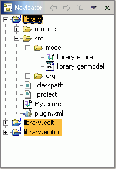

Generating an Extended EMF Model
Top
Previous
Next: Creating a new EMF Model Project from a Rose Model or Java Interfaces
Step 0: Prerequisites
You have generated the library model as well as its editor in an
Eclipse workspace following the instructions in the tutorial "Generating
an EMF Model".
- Launch Eclipse and verify that these three projects
are shown in the Navigator view in the Resource perspective: "library", "library.edit", and "library.editor".

Top
Previous
Next: Creating a new EMF Model Project from a Rose Model or Java Interfaces